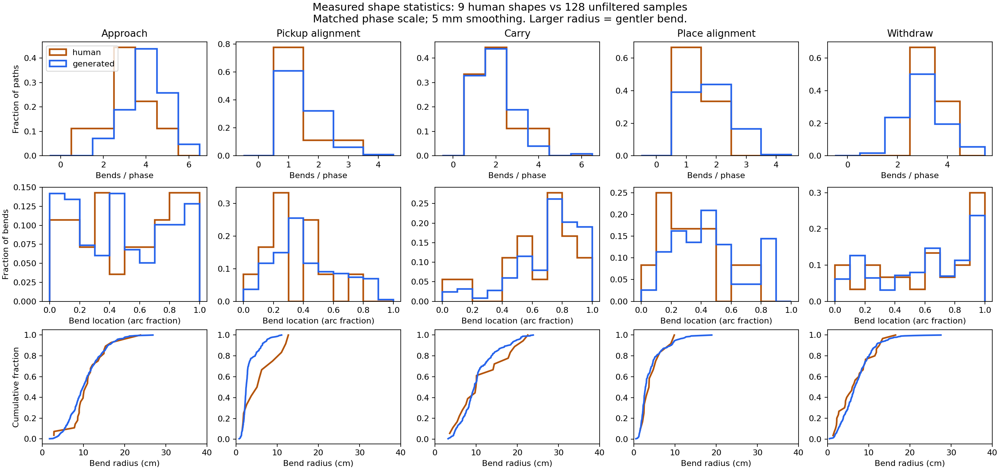

Sample 1 · 16.14 s
Reset 43024 · style draw 0 · passed physical replay
← All motion-comparison galleries
Instead of selecting one human episode, this version draws a new correlated shape for each phase from a model fitted to all nine annotated demonstrations. The task goals still come from the stacking scene.
Actual simulation speed, 1×. Different durations are preserved.
Reset 43024 · style draw 0 · passed physical replay
Reset 43024 · style draw 1 · passed physical replay
Reset 43024 · style draw 2 · passed physical replay
5 / 5 attempts passed, with no retries or amplitude fallback: these three style draws on reset 43024 plus resets 42801 and 43025. Independent action replay found no disallowed contacts and confirmed a supported, stable stack after release and withdrawal. Five attempts establish feasibility, not a general success rate.
Rotate either plot. Black marks the start; red marks the end. The two plots share axis limits. Shapes are aligned to their start–end direction and shown at a common size for each phase, so these are shape comparisons, not the original scene positions.
The right-hand examples are unfiltered draws, including awkward ones; they are not selected for success. The videos additionally apply task constraints, sampled offsets, wrist timing and geometry-dependent speed, then execute with Fabrics.
Not exactly. Below are measured distributions from nine human demonstrations and 128 new samples. These compare geometry before task-specific scaling and contact constraints. Each phase uses the same scale for humans and samples; bend detection uses 5 mm spatial smoothing.
| Phase | Human bends / path | Sampled bends / path |
|---|---|---|
| move towards ring | 3.11 | 4.02 |
| align and pickup | 1.33 | 1.47 |
| move the ring to the pole | 2.00 | 1.97 |
| align and open | 1.33 | 1.79 |
| withdraw | 3.33 | 3.04 |

This is a preliminary model. Approach and placement alignment still produce extra bends on average. Matching the carry count does not prove that bend locations, sharpness or combinations match. Nine demonstrations from a ring-and-pole task cannot establish a task-independent human motion distribution.
For each annotated phase, subtract the straight start–end connection and express the remaining displacement in a local chord/gravity frame. Fit an endpoint-zero cubic B-spline. Concatenate all five phases’ coefficients per episode, then estimate their joint mean and covariance.
A new trajectory uses coefficients = mean + covariance_modes × fresh_normal_draw. No donor episode is selected. Correlations across axes, curve locations and phases are retained. The mean is a model parameter, not the path we always execute. A single Gaussian is an explicit assumption; it cannot reliably identify separate styles from only nine episodes.
The 16-basis spline has a median positional reconstruction error of 0.24 mm against the dense, smoothed human source (maximum phase RMS 1.07 mm). But even the best projection of a left-out demonstration onto the other eight demonstrations’ shape subspace has median error 27.7 mm. That is an optimistic coverage diagnostic, not a prediction score, and it shows that more human examples could add substantial variation. The fitted covariance has only eight independent directions.
Shape sampling, not human speed learning: wrist and timing parameters still use our existing engineered sampling ranges. Fixed task criteria, physics and Fabrics gains are preserved. Contact alignment and clearance constraints can suppress variation. The shape diagnostics use phase-local boundaries, unlike the earlier whole-path detector with later phase attribution; counts are not interchangeable. Human curves here come from dense globally smoothed geometry, not straight chords between the old 25-point library samples.
All 128 sampled curves had finite coordinates, exact residual endpoints, reproducible seeds, and none was an exact copy of a training curve. These checks do not prove novelty beyond the observed shape subspace or human likeness.
Earlier human-informed examples · Previous nominal Fabrics / IK / template comparison · Model and assumptions · Geometry measurements · All five execution outcomes · Execution checks